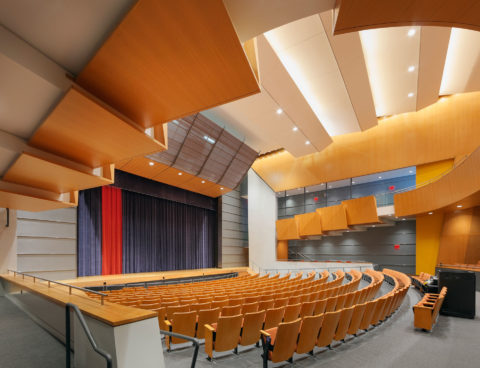
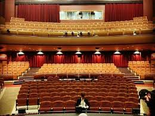
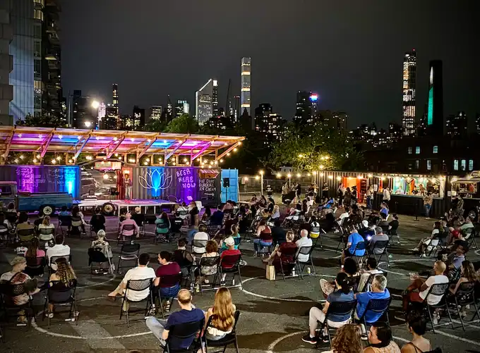
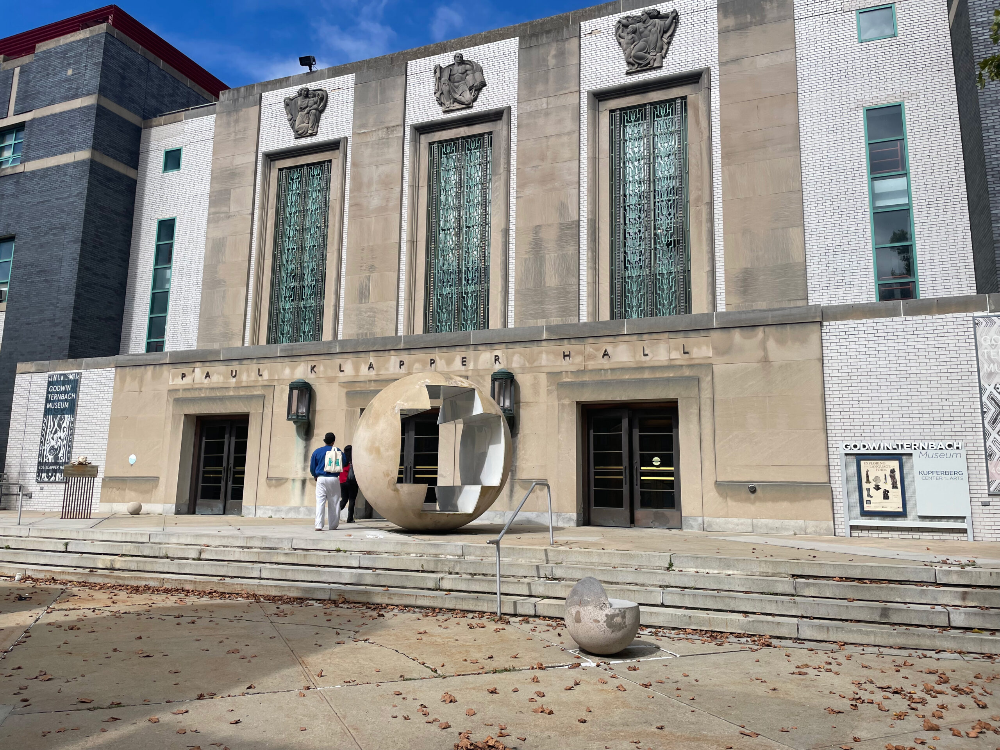
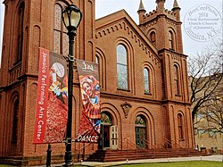
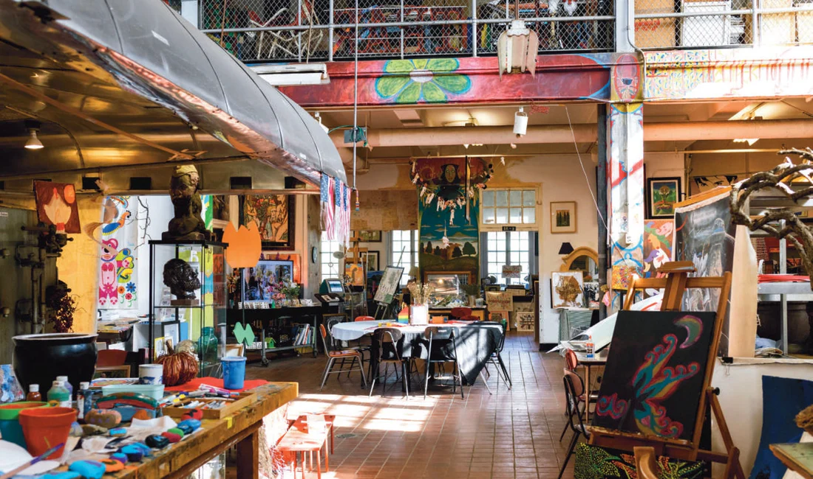

Music Hall
Flushing Town Hall
Historic cultural venue featuring chamber music, classical
concerts, and global fine-arts traditions.

Music Hall
Queensborough Performing Arts Center
A formal campus venue presenting classical music, ballet, and
opera-adjacent performances.

Music Hall
Tony Bennett Concert Hall
Formal concert space featuring classical, jazz, orchestral, and
student-led fine-arts performances.

Theatre
Black Spectrum Theater Co. Inc.
Venue dedicated to African-American culture through theatrical
productions & films.

Theatre
Goldstein Theatre (Queens College)
Community college-based performing arts theater.

Theatre
Kupferberg Center for the Arts (Queens College)
Contemporary Queens College performing arts venue.

Theatre
Milton G. Bassin Performing Arts Center
Theater & performance venue.

Theatre
Queens Theatre
Theater & performance venue.

Theatre
Thalia Spanish Theatre
Bilingual theater celebrating Latin American culture.

Theatre
The Little Theatre (St. John's University)
Theater & performance venue.

Museum
Culture Lab LIC
Relaxed warehouse-style gallery space in Long Island City
exhibiting art and hosting live music and theater events in a
creative, accessible setting.

Museum
Godwin-Ternbach Museum
Professional not-for-profit art institution on the Queens College
campus, offering diverse collections and educational programming
for students and the public.

Museum
Jamaica Center for Arts & Learning
Performing and visual arts center founded in 1972 to serve and
revitalize the Jamaica community, offering exhibitions,
performances, and arts education programs.

Museum
Louis Armstrong House Museum
Historic house museum in Corona preserving the home of jazz legend
Louis Armstrong and his wife Lucille Wilson, offering guided tours
and educational programs rooted in music history.

Museum
MoMA PS1
Contemporary art institution in Long Island City and one of the
oldest and largest organizations in the United States dedicated to
contemporary art, affiliated with the Museum of Modern Art.

Museum
Queens Museum
Art museum and educational center in Flushing Meadows Corona Park,
home to the iconic Panorama of New York City and a wide range of
exhibitions, school programs, and community events.

Museum
The Living Museum
Unique art studio at Creedmoor Psychiatric Center dedicated to
presenting art produced by patients, offering a powerful and
humanizing lens on creativity, mental health, and expression.